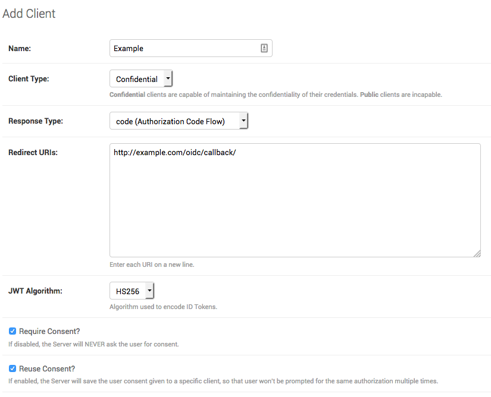
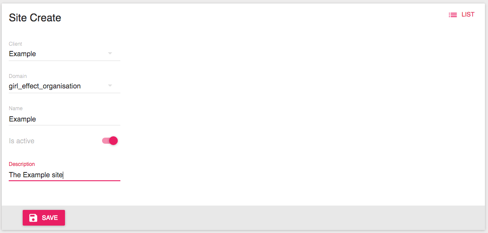
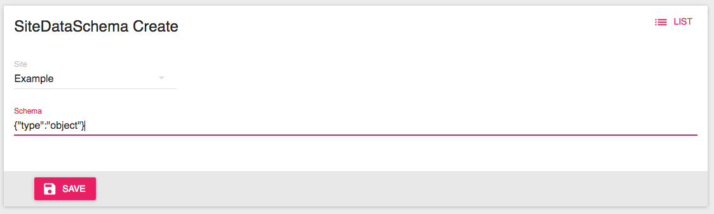

2. Adding a new application¶
To add a new application to the Girl Effect infrastructure, a few things need to be set up.
2.1. Creating a Client¶
In order for your application to make use of OIDC, you will need to set up a client in the Authentication Service.

The client creation form.
The fields explained:
- Name (required)
- Display name for the your client.
- Client Type (required)
- Select Confidential.
- Response Type (required)
- Select Code (Authorization Code Flow).
- Redirect URIs (required)
- A list of comma delimited uri strings. This is validated against the client, to ensure the users are never redirected off site unless its a trusted client. An example would be http://example.com/oidc/callback/.
- JWT Algorithm (required)
- Select the most appropriate for your application.
- Require consent
- If your site is accessing any personal information of your user, this should be checked.
- Reuse consent
- If you only want to ask for consent on the first login, this should be checked.
- Post Logout Redirect URIs
- A list of comma delimited uri strings to ensure users are redirected back to your application. An example would be http://example.com
2.2. Creating a Site¶
Now that the client has been created, we can set up a site for the client over here.

The site creation form.
The fields explained:
- Client (required)
- Select the client you just created.
- Domain (required)
- Select a domain most appropriate to your application.
- Name (required)
- Name your site. Preferably the same as the client name you used previously.
- Is Active
- Make active if you want to use your site immediately.
- Description
- Describe your application.
2.3. Setting up the data schema for a site¶

The schema creation form.
The fields explained:
- Site (required)
- Select the site you have created.
- Schema (required)
- The schema defines what your users’ data will look like. The data is validated against this schema. JsonSchema is used to define the schemas. A basic schema can be: {“type”: “object”}.